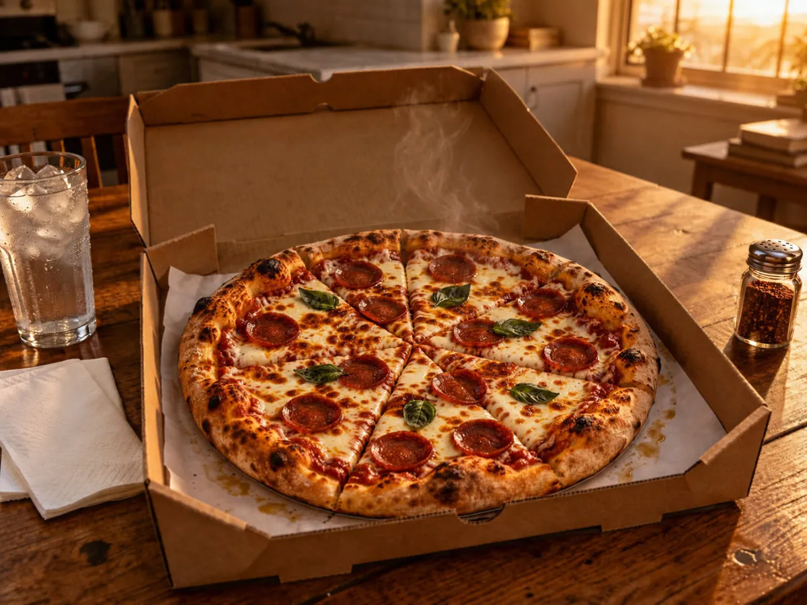

Pizza bezorgen of afhalen in Nijmegen: een pizzeria in jouw wijk
Bijgewerkt op 23 november 2026.
Op de bank, de oven uit en geen zin om te koken? Dan wil je een pizzeria die snel bij je is. Daarom zetten we per wijk de pizzeria's op een rij die bezorgen of waar je je pizza afhaalt. We zetten erbij wie tot laat open is en waar je goedkoop pizza haalt.
Zin in pizza aan tafel, in een echte pizzeria? Lees dan onze hoofdpagina pizza in Nijmegen: de beste pizzeria's, met Desem, Renato's en Pizza Pezzo.

Zo hebben we gekozen
We keken in november 2026 naar de afhaalzaken en restaurants in onze bedrijvengids die pizza op de kaart hebben. Per wijk kozen we zaken die zelf bezorgen of waar je afhaalt. De tijden komen van hun eigen site. Die veranderen weleens, dus kijk even voordat je bestelt.
Centrum en Bottendaal
Pizzeria Chipito: pizza of döner, allebei kan
Achter het station, in Bottendaal, bakt Chipito pizza's en pasta. Wie twijfelt, bestelt erbij een döner, dürüm of kapsalon, want die staan ook op de kaart.
Afhalen kan elke dag van vier tot tien uur 's avonds. Op de eigen site krijgt de zaak gemiddeld een 4,9 van klanten.
Goed voor: een gezin waar niet iedereen pizza wil.
Corona Tweede Walstraat: als het laat wordt
Aan de Tweede Walstraat vind je pizza, friet, döner en kapsalon onder één dak. De zaak is volgens de eigen site open tot diep in de nacht, tot vijf of zes uur.
Dat maakt Corona de plek voor een pizza na het stappen in de binnenstad.
Goed voor: een nachthap na het uitgaan.
Nijmegen-Oost
Il Nano: Italiaans, met vispizza's
Il Nano aan de Berg en Dalseweg is een kleine Italiaan. Je haalt er pizza af, laat bezorgen of eet ter plekke. Naast de gewone pizza's staan er vispizza's, vegetarische pizza's en ovenschotels op de kaart.
De zaak is vroeg op de avond open, van vier tot half negen, en op maandag dicht.
Goed voor: wie op tijd eet en het Italiaans wil houden.
Emmi's: pizzadag op maandag en dinsdag
In de Archipelstraat zit pizzeria-cafetaria Emmi's. Op maandag en dinsdag is het pizzadag: haal je je pizza zelf op, dan betaal je minder. Op woensdag geldt hetzelfde voor schotels.
Bezorgen kan elke dag van vier uur tot kwart voor elf. Naast pizza heeft Emmi's ook burgers, friet en kapsalon.
Goed voor: een goedkope pizza aan het begin van de week.
Nijmegen-West
Eetcafé Nul24: in het weekend tot na tweeën
In de Wolfskuil kun je bij Nul24 binnen eten, afhalen of laten bezorgen. Door de week bezorgen ze tot kwart voor twaalf, op vrijdag en zaterdag zelfs tot kwart voor drie 's nachts.
Bestel je via de eigen site, dan krijg je bij bezorging een gratis frisdrank.
Goed voor: late trek in West.
New Pronto: ook lahmacun
New Pronto aan de Waterstraat bakt pizza's, maar ook lahmacun, de dunne Turkse pizza. Er staan ook pasta's, schotels en rijstgerechten op de kaart.
Bezorgen kan van half vier tot half tien. Op maandag is de zaak dicht.
Goed voor: wie zin heeft in iets anders dan een gewone pizza.
La Pineta: ook op maandag tot middernacht
Cafetaria Pizzeria La Pineta zit aan de Voorstadslaan in Hees. Je bestelt er pizza, Turkse pizza, pasta en schotels.
Afhalen en bezorgen kan elke dag tot elf uur, ook op maandag, als veel andere pizzeria's dicht zijn.
Goed voor: pizza op maandagavond.
Hatert en Dukenburg
Fifty Fifty: pizza met een ijsje erbij
Pizzeria Fifty Fifty in Hatert heeft een lange kaart met pizza's, calzones, pasta en lahmacun. Een margherita kost er 11,50 euro.
Leuk: bij een combimaaltijd zit een bakje Ben & Jerry's als toetje.
Goed voor: een avondje bank met dessert.
Pizzeria Burak: bezorgen vanaf twaalf euro
Aan het Zwanenveld in Dukenburg maakt Burak pizza's, pasta en friet kapsalons. Bezorgen kan van vijf tot tien uur 's avonds.
Je bestelt vanaf twaalf euro, en de bezorgkosten beginnen bij 2,50 euro. Afhalen kan al vanaf half drie.
Goed voor: Dukenburgers die het thuis willen hebben.
Lindenholt en Oosterhout
Pizzeria Prego: pizza of smashburger
In winkelcentrum Leuvensbroek zit Pizzeria Prego. Naast pizza's maken ze smashburgers en grillgerechten, en je kunt er ook een tafel reserveren.
Bezorgen kan elke dag van vier tot tien uur, afhalen al vanaf twaalf uur 's middags.
Goed voor: een snelle lunch of avondeten in Lindenholt.
Mickey's Corner: pizza en softijs
Een paar deuren verder heeft Mickey's Corner pizza, shoarma en Hollandse snacks. Voor na het eten is er softijs.
Je haalt er elke dag van twaalf tot tien uur 's avonds af.
Goed voor: kinderen die na de pizza een ijsje willen.
Pizzeria Bardolino: met kindermenu
In het dorp Oosterhout, in Nijmegen-Noord, zit Pizzeria Bardolino. Je bestelt er pizza, calzones en pasta, en voor kinderen is er een eigen menu.
Let op: van maandag tot en met woensdag is Bardolino dicht. Van donderdag tot en met zondag bezorgen ze van vier tot negen uur.
Goed voor: gezinnen in Oosterhout en de Waalsprong.
Ook goed
- Papa Johns in de Molenstraat, als je gewoon een bekende keten wilt.
- Mangiafoco is een Italiaanse pizzatruck in de Steenbokstraat, tegenover de Plus. Bel of app om je pizza te bestellen.
- Een pizza aan tafel? Kijk dan bij Pizzacafé Desem in de watertoren of bij Renato's.
Veelgestelde vragen
Welke pizzeria in Nijmegen bezorgt tot laat?
Eetcafé Nul24 in West bezorgt op vrijdag en zaterdag tot kwart voor drie 's nachts. Corona aan de Tweede Walstraat in het centrum is volgens de eigen site tot vijf of zes uur 's ochtends open.
Waar haal je goedkoop pizza in Nijmegen?
Bij Emmi's in Nijmegen-Oost is het op maandag en dinsdag pizzadag: wie zelf afhaalt, betaalt minder.
Welke pizzeria is open op maandag?
La Pineta in Hees, Emmi's in Oost, Nul24 in West, Prego en Mickey's Corner in Lindenholt zijn op maandag open. Il Nano en New Pronto zijn dan dicht.
Waar eet je de beste pizza aan tafel in Nijmegen?
Daarvoor hebben we een aparte gids: pizza in Nijmegen: de beste pizzeria's.